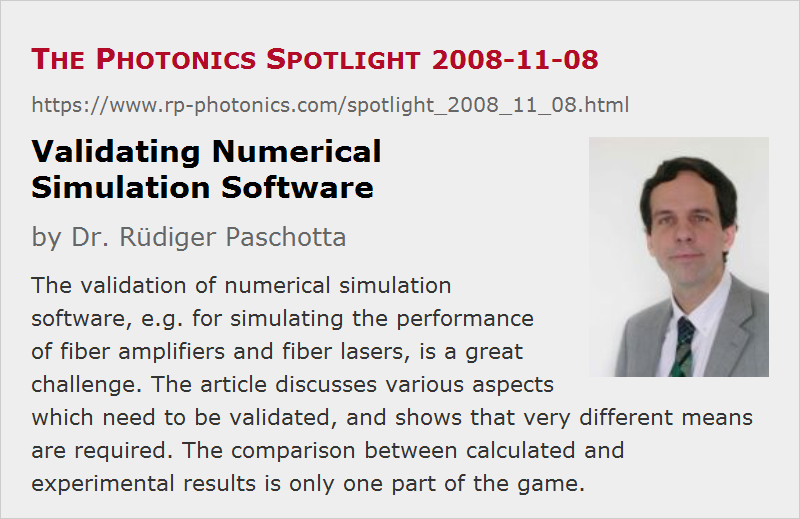

Validating Numerical Simulation Software
Posted on 2008-11-08 as a part of the Photonics Spotlight (available as e-mail newsletter!)
Permanent link: https://www.rp-photonics.com/spotlight_2008_11_08.html
Author: Dr. Rüdiger Paschotta, RP Photonics Consulting GmbH
Abstract: The validation of numerical simulation software, e.g. for simulating the performance of fiber amplifiers and fiber lasers, is a great challenge. The article discusses various aspects which need to be validated, and shows that very different means are required. The comparison between calculated and experimental results is only one part of the game.

Ref.: encyclopedia article on laser modeling, fiber amplifiers and fiber lasers; RP Fiber Power software
When talking about my numerical simulation software, I have occasionally been asked: “Have you validated it by comparing it with experimental data?” This question reveals (a) the important awareness that a complex model needs to be validated in order produce reliable results and (b) perhaps a somewhat superficial understanding of validation.
Simply speaking, validation means to make sure that errors are avoided. So the natural first question should be: What kind of errors could occur? It turns out that very different types of errors are possible, and these require very different measures to be avoided.
Shortcomings of the Physical Model
All numerical simulation software is based on some kind of physical model of reality. For example, a simulation software for fiber amplifiers and fiber lasers, such as RP Fiber Power, relies on a model which contains energy levels of laser-active ions, assumptions concerning the radiative and non-radiative transitions between these energy levels, and some assumptions concerning the propagation of light, e.g. in the form of propagation modes of the fiber.
An experienced expert in the 21st century surely knows very well how fiber modes propagate and what kind of transitions in laser-active ions can exist. One may, however, still overlook certain effects or underestimate their importance. For example, a relatively simple model of erbium (Er3+) ions in a fiber may be sufficient as long as the active fiber has a low doping concentration, but fibers with higher concentration exhibit quenching effects caused by energy transfers which substantially affect the performance. Experience must also contain the knowledge of scientific literature, giving some guidance concerning what has been tested and which areas are unsafe.
Obviously, validation in this situation is essentially not a matter of computer software, but rather of carefully comparing experimental results with theoretical expectations, or of studying the existing scientific literature. This job cannot be done once for ever with a certain software; it must be done each time a model is applied to a new class of active fibers, for example. Good software then helps to conveniently calculate the theoretical expectations, but is certainly no replacement for the expertise of some person.
Errors in Model Parameters
The results of models can of course be wrong simply because the values of certain parameters, with which the physical system is described, have not been correctly determined. For example, it is not straight-forward to obtain reliable spectroscopic data of active fibers, and few experts understand this job really well.
Here, we again need careful comparisons between theoretical expectations and measured data. Software can again help to calculate theoretical expectations, but it also takes a lot of experience to device the right tests, which are both sufficiently simple to do and reliably deliver the required information. One must avoid, for example, simply tweaking some fitting parameters until the results seem to match the experimental ones – there are often too many fitting parameters to produce reliable results. Instead, carefully devised experiments are needed which reliably target certain quantities while not being too much affected by others.
Errors in the Numerical Implementation
Even if the physical model is correct, it may happen that the numerical code for solving the resulting equations has some defects. This may simply lead to wrong results – possibly only in certain cases – or to the failure of an iterative algorithm to converge to the solution. I actually heard from a customer of mine, nowadays using RP Fiber Power, that he first started with some other commercial software, but found it to be unusable, since its algorithm didn't properly converge, and then simply delivered inaccurate results instead of at least apologizing. (I refrain from telling which software that was, but it is a well known one.)
In case of fiber laser models, it is actually not easy to solve such problems. The key challenge is that the “dynamical behavior” of the typical iterative algorithms used to solve the differential equations is very much dependent on the type of system (fiber amplifier with co- or counterpropagating pump, fiber laser) and its parameters (e.g. operation close to or far above threshold, small or large resonator losses, number of possibly lasing channels, presence of ASE, cascade lasing, etc.). So the algorithm may work well in some cases but not in others, which the developer has not tested.
How does validation work to avoid such kinds of errors? Obviously, comparisons with experimental data are not the best idea, as you hardly get an exhaustive data set, the experimental data may be affected by unknown effects, etc. Instead, the best solution is usually to construct models for situations where some key aspects can be calculated analytically, or to check whether the solutions fulfill certain consistency conditions. (Actually, it is often not too difficult to check the validity of a solution, compared with finding it.) And the crucial point is to do many such checks in a wide range of different situations.
Conclusions
The above discussion clearly shows that the validation of numerical simulations – not just software, but also the physical model used and its parameters – is a complex task. We can draw a number of conclusions:
- Comparisons with experimental data are of vital importance, but in this part the software is more a tool for the tests than the object to be tested.
- The software itself also needs to be tested, and this is usually better done with analytical means.
- Only the software itself and the basic model can be validated by the software developer. For concrete applications, particularly in non-standard areas, a lot of vigilance is still needed to avoid errors.
- For such reasons, having suitable simulation software is only part of the game. Therefore, it is always advisable to first find out whether the best solution e.g. for some company is to buy a software license in order to do the simulations themselves, or to have an external expert with special modeling skills (and software, of course) to deliver consultancy. At least, a software license should normally be accompanied by competent support – not only concerning handling of the software, but the modeling challenge themselves.
This article is a posting of the Photonics Spotlight, authored by Dr. Rüdiger Paschotta. You may link to this page and cite it, because its location is permanent. See also the RP Photonics Encyclopedia.
Note that you can also receive the articles in the form of a newsletter or with an RSS feed.
Questions and Comments from Users
Here you can submit questions and comments. As far as they get accepted by the author, they will appear above this paragraph together with the author’s answer. The author will decide on acceptance based on certain criteria. Essentially, the issue must be of sufficiently broad interest.
Please do not enter personal data here; we would otherwise delete it soon. (See also our privacy declaration.) If you wish to receive personal feedback or consultancy from the author, please contact him e.g. via e-mail.
By submitting the information, you give your consent to the potential publication of your inputs on our website according to our rules. (If you later retract your consent, we will delete those inputs.) As your inputs are first reviewed by the author, they may be published with some delay.
|  |
If you like this page, please share the link with your friends and colleagues, e.g. via social media:
These sharing buttons are implemented in a privacy-friendly way!